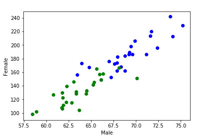

KNN data gender
Pengertian KNN(k-nearest neighbor)¶
Algoritme k-nearest neighbor (k-NN atau KNN) adalah sebuah metode untuk melakukan klasifikasi terhadap objek berdasarkan data pembelajaran yang jaraknya paling dekat dengan objek tersebut.
Data pembelajaran diproyeksikan ke ruang berdimensi banyak, dimana masing-masing dimensi merepresentasikan fitur dari data. Ruang ini dibagi menjadi bagian-bagian berdasarkan klasifikasi data pembelajaran. Sebuah titik pada ruang ini ditandai kelas c jika kelas c merupakan klasifikasi yang paling banyak ditemui pada k buah tetangga terdekat titk tersebut. Dekat atau jauhnya tetangga biasanya dihitung berdasarkan jarak Euclidean.
Pada fase pembelajaran, algoritme ini hanya melakukan penyimpanan vektor-vektor fitur dan klasifikasi dari data pembelajaran. Pada fase klasifikasi, fitur-fitur yang sama dihitung untuk data test (yang klasifikasinya tidak diketahui). Jarak dari vektor yang baru ini terhadap seluruh vektor data pembelajaran dihitung, dan sejumlah k buah yang paling dekat diambil. Titik yang baru klasifikasinya diprediksikan termasuk pada klasifikasi terbanyak dari titik-titik tersebut.
Nilai k yang terbaik untuk algoritme ini tergantung pada data; secara umumnya, nilai k yang tinggi akan mengurangi efek noise pada klasifikasi, tetapi membuat batasan antara setiap klasifikasi menjadi lebih kabur. Nilai k yang bagus dapat dipilih dengan optimasi parameter, misalnya dengan menggunakan cross-validation. Kasus khusus di mana klasifikasi diprediksikan berdasarkan data pembelajaran yang paling dekat (dengan kata lain, k = 1) disebut algoritme nearest neighbor.
Ketepatan algoritme k-NN ini sangat dipengaruhi oleh ada atau tidaknya fitur-fitur yang tidak relevan, atau jika bobot fitur tersebut tidak setara dengan relevansinya terhadap klasifikasi. Riset terhadap algoritme ini sebagian besar membahas bagaimana memilih dan memberi bobot terhadap fitur, agar performa klasifikasi menjadi lebih baik.
Terdapat beberapa jenis algoritme pencarian tetangga terdekat, diantaranya:¶
- Linear scan
- Pohon kd
- Pohon Balltree
- Pohon metrik
- Locally-sensitive hashing (LSH)
Algoritme k-NN ini memiliki konsistensi yang kuat. Ketika jumlah data mendekati tak hingga, algoritme ini menjamin error rate yang tidak lebih dari dua kali Bayes error rate (error rate minimum untuk distribusi data tertentu).
Implementasi KNN¶
Pada data "Male Female Detection By Height Weight".
Mengimpor dan mengumpulkan data¶
data=pd.read_csv('../input/weight-height.csv')
data.head(10)import numpy as np
from collections import Counter
import matplotlib.pyplot as plt
import pandas as pd
data=pd.read_csv('../input/weight-height.csv')
data.head(10)Menghapus kolom "gender" yang untuk menampilkan data numerik¶
df=data
columns=['Gender']
df = df.drop(columns, axis=1)
df.head(10)Menggabungkan string "frame" dan di tampung menggunakan array¶
Xm=df[0:25]
Xf=df[5001:5026]
frame=[Xm,Xf]
X_train=pd.concat(frame)
X_train=np.array(X_train)
print(X_train)
X_train.shapelbl=data['Gender']
ym=lbl[0:25]
yf=lbl[5001:5026]
frames=[ym,yf]
Y_train=pd.concat(frames)
Y_train=np.array(Y_train)
print(Y_train)
Y_train.shapelabel=data['Gender']
lb=label[400:410]
lc=label[9000:9010]
frames=[lb,lc]
Y=pd.concat(frames)
Y=np.array(Y)
print(Y)Menampikan akurasi data "gender"¶
x = data['Height']
y=data['Weight']
male=x[0:25]
female=x[5001:5026]
wm=y[0:25]
wf=y[5001:5026]
plt.scatter(male,wm, color='b')
plt.scatter(female,wf,color='g')
plt.xlabel('Male')
plt.ylabel('Female')
plt.show()Menggabungkan string "frame" dan di tampung menggunakan array¶
testx=df[400:410]
testy=df[9000:9010]
frames=[testx,testy]
X=pd.concat(frames)
X=np.array(X)
print(X)
X.shapeMembuat fungsi sederhana dengan beberapa argument secara anonymous¶
def predict(input_feature_set, k):
distances = []
z=0
for training_feature_set in X_train:
group=Y_train[z]
#print("Group=",group)
#print("Training Feature=",training_feature_set)
euclidean_distance = np.linalg.norm(np.array(input_feature_set) - np.array(training_feature_set))
#print("Distance=",euclidean_distance)
distances.append([euclidean_distance, group])
z=z+1
#print(z)
nearest = sorted(distances)[:k]
#print("Sorted=",nearest)
votes=[]
#votes = [d[1] for d in nearest]
for d in nearest:
votes.append(d[1])
#print(votes)
#prediction = Counter(votes).most_common(1)[0][0]
item={}
for i in votes:
if i in item:
item[i]=item[i]+1
else:
item[i]=1
#finding most common class
m=0
for k in item:
if item[k]>m:
m=item[k]
for k in item:
if item[k]==m:
index=k
prediction=index
return predictionMenampilkan data training "Gender"¶
#Training
toutput=[]
for j in X_train:
predicted=predict(j,3)
toutput.append(predicted)
print("Output=",toutput)
print(len(toutput))Menampilkan training acuracy¶
c=0
for p in range(0,50):
if toutput[p]==Y_train[p]:
c=c+1
result=(c/50.0)*100
print("Training Accuracy=",result,"%")Menampilkan prediksi pada data "Gender"
output=[]
for j in X:
predicted=predict(j,3)
output.append(predicted)
print("Output=",output)Menampilkan Testing acuracy
c=0
for p in range(0,20):
if output[p]==Y[p]:
c=c+1
result=(c/20.0)*100
print("Testing Accuracy=",result,"%")Hasil Implementasi¶
[[ 73.84701702 241.89356318] [ 68.78190405 162.31047252] [ 74.11010539 212.74085556] [ 71.7309784 220.0424703 ] [ 69.88179586 206.34980062] [ 67.25301569 152.21215576] [ 68.78508125 183.9278886 ] [ 68.34851551 167.97111049] [ 67.01894966 175.9294404 ] [ 63.45649398 156.39967639] [ 71.19538228 186.60492556] [ 71.64080512 213.74116949] [ 64.76632913 167.12746107] [ 69.2830701 189.44618139] [ 69.24373223 186.43416802] [ 67.6456197 172.18693006] [ 72.41831663 196.02850633] [ 63.97432572 172.88347021] [ 69.6400599 185.98395757] [ 67.93600485 182.42664801] [ 67.91505019 174.11592908] [ 69.43943987 197.73142161] [ 66.14913196 149.17356601] [ 75.20597361 228.76178062] [ 67.89319634 162.00665185] [ 65.23001251 141.3058226 ] [ 63.36900376 131.04140269] [ 64.47999743 128.17151122] [ 61.79309615 129.78140705] [ 65.96801895 156.80208261] [ 62.85037864 114.96903825] [ 65.65215644 165.08300121] [ 61.89023374 111.67619921] [ 63.67786815 104.15155964] [ 68.10117224 166.57566076] [ 61.79887853 106.23368699] [ 63.37145896 128.11816912] [ 58.89588635 101.68261336] [ 58.4382491 98.19262093] [ 60.80979868 126.91546328] [ 70.12865283 151.25427035] [ 62.25742965 115.79739341] [ 61.73509022 107.86687236] [ 63.05955669 145.58992915] [ 62.28683837 139.52270767] [ 61.82747755 122.76616667] [ 66.34753722 157.38096482] [ 65.32063203 145.03737562] [ 66.1038728 148.64518257] [ 64.52718203 132.68086824]]
['Male' 'Male' 'Male' 'Male' 'Male' 'Male' 'Male' 'Male' 'Male' 'Male' 'Male' 'Male' 'Male' 'Male' 'Male' 'Male' 'Male' 'Male' 'Male' 'Male' 'Male' 'Male' 'Male' 'Male' 'Male' 'Female' 'Female' 'Female' 'Female' 'Female' 'Female' 'Female' 'Female' 'Female' 'Female' 'Female' 'Female' 'Female' 'Female' 'Female' 'Female' 'Female' 'Female' 'Female' 'Female' 'Female' 'Female' 'Female' 'Female' 'Female'] ['Male' 'Male' 'Male' 'Male' 'Male' 'Male' 'Male' 'Male' 'Male' 'Male' 'Female' 'Female' 'Female' 'Female' 'Female' 'Female' 'Female' 'Female' 'Female' 'Female']

[[ 69.97090362 202.86329303] [ 65.31346154 163.35733152] [ 71.90600544 217.02771464] [ 66.23390404 183.16123246] [ 65.81494282 166.58361051] [ 72.84494786 205.25088915] [ 70.94944345 189.70308882] [ 71.34380763 218.5863364 ] [ 71.05566416 203.13943303] [ 61.92554729 139.90507032] [ 58.52542646 107.79249645] [ 60.34078108 111.07775447] [ 61.43391285 97.05854929] [ 65.47590249 154.4408869 ] [ 60.48444501 121.79779334] [ 62.00031639 117.04835397] [ 59.66765209 114.3868654 ] [ 63.80329944 124.81306876] [ 62.86838051 132.69486866] [ 66.40655275 161.17621832]]
Output= ['Male', 'Male', 'Male', 'Male', 'Male', 'Male', 'Male', 'Male', 'Male', 'Female', 'Male', 'Male', 'Female', 'Male', 'Male', 'Male', 'Male', 'Male', 'Male', 'Male', 'Male', 'Male', 'Male', 'Male', 'Male', 'Female', 'Female', 'Female', 'Female', 'Female', 'Female', 'Female', 'Female', 'Female', 'Female', 'Female', 'Female', 'Female', 'Female', 'Female', 'Male', 'Female', 'Female', 'Female', 'Female', 'Female', 'Female', 'Female', 'Female', 'Female'] 50 Training Accuracy= 94.0 % Output= ['Male', 'Male', 'Male', 'Male', 'Female', 'Male', 'Male', 'Male', 'Male', 'Female', 'Female', 'Female', 'Female', 'Male', 'Female', 'Female', 'Female', 'Female', 'Female', 'Male'] Testing Accuracy= 80.0 %
Referensi :
https://id.wikipedia.org/wiki/KNN
https://www.kaggle.com/shawon10/male-female-detection-by-height-weight-knn